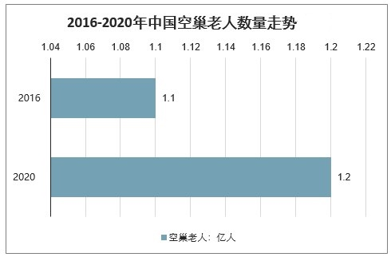

现状
|
我国进入老龄化社会以来,呈现出老年人口基数大、增速快、高龄化、失能化、空巢化趋势明显的态势,再加上我国未富先老的国情和家庭小型化的结构叠加在一起,养老问题异常严峻。 |
|
老龄化情况
1950年至2050年中国人口特征变化 |
人口老龄化进程正在加速发展。该人口特征趋势是儿童死亡率降低加上生育率下降所致。从1950到2015年间,中国每名妇女生育子女总数从6.11下降到1.66，总死亡率也在持续下降(从每万名人口22.2下降到7.2),这使得人口的期望寿命闻步提高(见图左)。在中国,出生时平均期望寿命已经从1950年的44.6岁上升到2015年的75.3岁，而在2050年将有望达到约80岁。 |
中国年龄别粗自杀率（/10万） |
根据2012年世卫组织的估计数字,中国的自杀率为8.7/10万( WH0,2014)。总体而言，自杀率随着年龄的增长而不断增加(见图左),70岁及以上男性的自杀率高于女性(55.8/10万 VS47.7/10万)。一项系统综述显示，60岁及以上老年人有自杀念头的流行率范围是13％－17％，不同研究结果之间稍有差异。而60岁及以上人群的年平均自杀率为23/10万。在中国,自杀趋势也随年龄而呈现出独特的人口统计学特征。最高年龄组(80岁以上)的自杀死亡的风险最高。而且，农村地区老年人的自杀率比城市要高得多。 |
数量变化
2020-2050年中国老龄人口测算 |
预测2020年、2030年、2040年、2050年我国60岁及以上老年人口数量将分别达到2.55亿人、3.71亿人、4.37亿人和4.83亿人，80岁及以上老年人口数量将分别达到0.29亿人、0.43亿人、0.67亿人和1.08亿人。 |
2020-2050年我国60岁以上老年人口数量及80岁以上老年人口数量 |
人口预测结果显示，2020年。2030年、2040年、 2050年我国60岁及以上老年人口数量将分别达到2,55亿人、3.71亿人、4.37亿人、4.83亿人，80岁及以上老年人口数量将分别达到0.29亿人、0.43亿人0.67亿人和1.08亿人。2021年5月11日发布的第七次全国人口普查结果显示，我国60岁及以上人口为26402万人，占18.70%（其中，65岁及以上人口为19064万人，占13.50%）。与2010年相比，60岁及以上人口的比重上升5.44个百分点。数据表明，人口老龄化程度进一步加深，未来一段时期将持续面临人口长期均衡发展的压力。目前中国人口已经进入老年型。性别间的死亡差异使女性老年人成为老年人口中的绝大多数。预计到2040年，65岁及以上老年人口占总人口的比例将超过20%。同时，老年人口高龄化趋势日益明显：80岁及以上高龄老人正以每年5%的速度增加，到2040年将增加到7400多万人。 |
2016-2020年中国空巢老人数量走势

|
2016年我国空巢老人超过1亿人，独居老人超过2000万人，空巢老年人口现象日益普遍。目前，中国空巢老年人口占老年总人口的一半。未来，空巢老年人口比例预计将突破70％，空巢老人与独居老人对精神慰藉的强烈需求催生了银发经济照料护理市场的诞生。老年人在一定程度上通过购买照料护理服务，缓解孤独感，解决陪伴的需求。 |
2016-2020年中国独居老人数量走势 |
独居老人和空巢老人增速加快，比重增高。随着我国城市化进程不断加快，家庭模式中传统三世同堂越来越少，越来越多的家庭趋于小型化，加之城市生活节奏的加快，年轻子女陪伴父母的时间变少，使得我国传统的家庭养老功能正在逐渐弱化。据最新调查显示2020年，独居老人和空巢老年人增加到1.18亿人左右，独居老人和空巢老人将成为老年人中的“主力军”。 |
年龄占比变化
中国老龄人口年龄占比变化 |
2040年，0-20岁青少年人口占比低于20%，而65岁以上老年人占比将超过20%。根据预测，2020年0-20岁、21-35岁、36-50岁人口占比分别下降至22.9%、21.7%、22.7%，而51-65岁、66-75岁、75岁以上人口占比分别提升至20.4%、8.2%、4.1%。而到了2040年，65岁以上人口占23.5%，50岁以上人口占比超过4成，0-20岁、21-35岁、36-50岁人口占比分别下降至19.7%、17.0%、18.2%。中国老龄人口占比将持续提升。 |